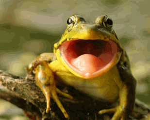

L'association gère, les activitées et évènements qui sont organisés
dans la commune.
La motivation qui l'anime est de réunir la
population, en créant des moments de convivialités et de générosités
entre les habitants. L'objectif étant de permettre une meilleur
entente et entraide du voisinage. Du coq à la grenouille tout le monde
s'entend !
Il fait bon vivre dans ce petit village pas trop loin de la ville,
mais toujours à la campagne.
L'été la rivière traversant la commune, beigne les habitants d'une sensation de fraîcheur douce et estivale. Du pont à la coline, les insectes virvoltent et s'aventurent au grès du vent sur des parcelles fleuries à souhait.
Placé dans un département agricole, les alentours du village sont un plaisir pour les promeneurs est tout les amoureux de nature. J'espère que ce village vous donne envie de le visiter.
